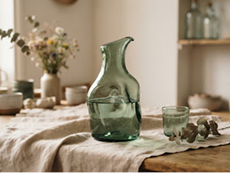
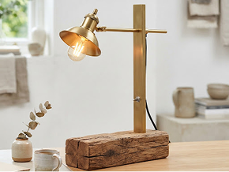
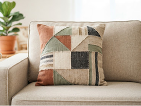
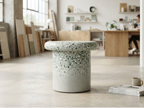
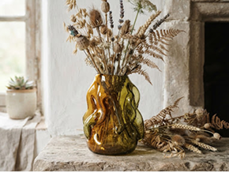
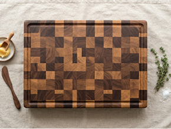
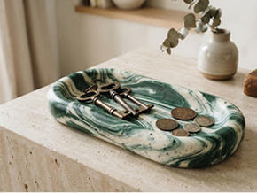
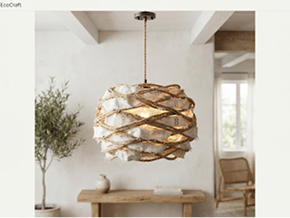

TRAÇABILITÉ MATIÈRE 100% VÉRIFIÉE
Chaque objet détourne des déchets nobles des filières d'enfouissement.
 Livraison ferroviaire & routière compensée
Livraison ferroviaire & routière compensée
Emballages 100% amidon de maïs compostable
FILIÈRE D'ÉCO-CONCEPTION FRANÇAISE
Catalogue d'objets upcyclés & pièces uniques
Des rebuts nobles réinventés en art de vivre durable. Chaque pièce est manufacturée à la main en série très limitée, traçable jusqu'au gisement source.
MATIÈRE DÉTOURNÉE
14.8 t
Depuis janvier 2025
ÉMISSIONS ÉVITÉES
-32.4 t
Équivalent CO₂ eq
ESPACES:
TRIER:

100% Bouteilles de vin recyclées -4.2 kg CO₂ Série numérotée • 12 ex.Carafe Écume Brute
Fondue au four solaire basse température à partir de verre cullet...

Lampe d'ambiance 'Bille de Chêne'
Poutre centenaire démontée d'une grange agricole, brossée à l'huile...

Chutes de Lin Normand -3.1 kg CO₂ Pièce Unique (#47)Coussin Géométrique 'Parcelle'
Assemblage minutieux de surplus de filatures françaises et rembourrage en...

100% Déchets Plastiques Marins -12.4 kg CO₂ Série Éditeur • 8 ex.Assise Terrazzo 'Estran'
Thermo-pressage sans colle de bouchons et filets de pêche récupérés...

100% Bocaux & Verre Cullet -5.0 kg CO₂ Pièce Unique (#12)Soliflore Organique 'Goutte'
Façonné à la canne traditionnelle sans moule industriel, chaque reflet est le...

Planche d'Apparat 'Mosaïque'
Chutes nobles de fabrication de meubles haut de gamme assemblées en...

100% Flacons HDPE Ménagers -2.8 kg CO₂ Stock : 6 ex.Coupe Vide-Poche 'Sillage'
Chaque pièce arbore des marbrures aléatoires et uniques résultant de la...

Voiles de Bateaux Surcyclées -7.5 kg CO₂ Dernière pièce disponibleSuspension Cocon 'Grand Large'
Toiles de dacron régatées collectées en Bretagne, lavées à l'eau de pluie et...
Emballage Zéro Plastique
Calage en copeaux de bois d'atelier non traité et sachets d'amidon de maïs 100% compostables à domicile.
Fret Éco-Responsable
Expéditions groupées bi-hebdomadaires privilégiant le rail et la livraison finale en vélo-cargo.
Passeport Numérique
Chaque pièce inclut un certificat de provenance horodaté détaillant le site exact de valorisation du matériau.